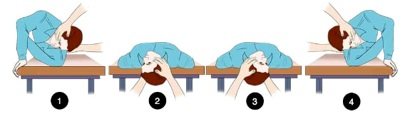
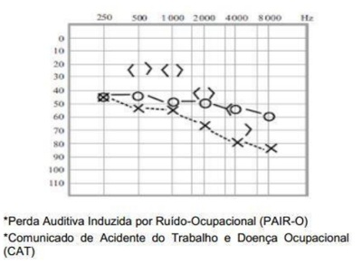

Questão 1 · Presbiacusia · 4000112380Com relação à saúde e prevenção de agravos em pacientes idosos, é correto afirmar:
A antidepressivos tricíclicos têm menor chance de causar distúrbios cognitivos emidosos, se comparados aos antidepressivos serotoninérgicos.
B benzodiazepínicos de ação prolongada são de maior risco para quedas em idosos, secomparados aos de curta ação.
C doenças ortopédicas, como espondilose lombar e osteoatrose de quadril,frequentemente, contribuem para a gênese de quedas em idosos.
D os
E perda auditiva contribui para o aumento da morbidade e diminuição da qualidade devida de pessoas idosas.
Questão 2 · Diagnóstico · Tratamento · Características Gerais e Fisiopatologia · 4000082066Uma mulher de 71 anos vai ao médico queixando-se de tontura. Diz que esse quadro já persiste por algumas semanas. Quando se movimenta na cama, de um lado para outro, isso piora e dura alguns segundos, mas já a deixou tonta o su ciente para, ao se levantar, sofrer uma queda. Nega náuseas e zumbido. Sua audição encontra-se diminuída no ouvido direito, mas a paciente consegue conversar normalmente. Ao exame clínico, apresenta manobra de Dix-Hallpike positiva com nistagmo latente de 6 segundos que desaparece após 35 segundos. Não teve náuseas e teve teste de Romberg negativo. Diante desse quadro, em relação ao diagnóstico e ao tratamento, apresenta
A vertigem posicional paroxística e deve fazer manobras de reposicionamento (Epley).
B neurite vestibular subaguda e deve receber dexametasona por 10 dias.
C doença de Meniére e deve receber betaistina por 30 dias.
D vertigem paroxística cerebelar e deve fazer manobras de reposicionamento (Semont).
Revisar: possível letra faltando em enunciado
Questão 3 · Zumbido · 4000026543Fernando, 65 anos, é hipertenso e diabético e já faz seguimento na UBS perto de sua casa há alguns anos. Está em uso de clortalidona, enalapril, metformina, glicazida, atorvastatina e AAS. Durante uma consulta rotineira, comenta com sua médica de família e comunidade que notou piora de um zumbido bilateral nos últimos 4 meses. A rma que já possuía este sintoma há alguns anos, mas que nunca havia o incomodado a ponto de se preocupar como agora. Durante o exame físico, não houve alteração em aparelho cardiovascular, aparelho respiratório ou otoscopia, além de PA = 128 x 80 mmHg. Seus últimos exames mostravam hemoglobina glicada = 6,9%, TSH = 2,73 e per l lipídico com boa resposta ao uso da estatina. No meio das medicações utilizadas pelo paciente, aquela que pode ter relação com a piora ou surgimento do zumbido é:
A AAS.
B Metformina.
C Atorvastatina.
D Enalapril.
Questão 4 · Presbiacusia · 4000026530Fernando, 65 anos, é hipertenso e diabético e já faz seguimento na UBS perto de sua casa há alguns anos. Está em uso de clortalidona, enalapril, metformina, glicazida, atorvastatina e AAS. Durante uma consulta rotineira, comenta com sua médica de família e comunidade que notou piora de um zumbido bilateral nos últimos 4 meses. A rma que já possuía este sintoma há alguns anos, mas que nunca havia o incomodado a ponto de se preocupar como agora. Durante o exame físico, não houve alteração em aparelho cardiovascular, aparelho respiratório ou otoscopia, além de PA = 128 x 80 mmHg. Seus últimos exames mostravam hemoglobina glicada = 6,9%, TSH = 2,73 e perfil lipídico com boa resposta ao uso da estatina. Dentre as alternativas abaixo, a causa mais provável do zumbido do senhor Fernando é:
A Otosclerose.
B Doença de Meniére.
C Presbiacusia.
D Disfunção da articulação têmporo-mandibular.
Questão 5 · Apresentação Clínica · 4000024261São características do nistagmo da Vertigem Paroxística Posicional Benigna, EXCETO?
A Infatigabilidade.
B Inversão.
C Latência.
D Horizontal.
Questão 6 · · 4000121096Perda Auditiva induzida por Ruído PAIR ou Perda Auditiva induzida por níveis de Pressão Sonora Elevados PAINPSE Presbiacusia Homem de 75 anos apresenta di culdade para entender as pessoas e ouvir televisão em casa. Nega otorreia, vertigem ou zumbido. AP: Hipertenso há 15 anos, em uso de medicação com controle adequado, diabetes mellitus, controlado com uso de medicação oral. Sempre trabalhou como motorista de caminhão. Exame físico: Otoscopia normal. Audiometria: Imagem a seguir. A hipótese diagnóstica é

A presbiacusia com perda auditiva condutiva bilateral, apresentando perda “em gota” em 6000 e 8000 Hz, na audiometria.
B perda auditiva induzida por ruído (PAIR), com perda auditiva condutiva bilateral, com “gota acústica” em 6000 Hz, na audiometria.
C presbiacusia, com perda auditiva neurossensorial bilateral, e perda descrescente “em rampa”, na audiometria.
D perda auditiva induzida por ruído (PAIR), com perda auditiva neurossensorial bilateral, descrescente, com “gota acústica” em 6000 Hz, na audiometria.
Questão 7 · Perda Neurossensorial · NR7 Programa de Controle Médico de Saúde Ocupacional · 4000098445Perda Auditiva induzida por Ruído PAIR ou Perda Auditiva induzida por níveis de Pressão Sonora Elevados PAINPSE Ao comparar a perda auditiva relacionada ao ruído ocupacional e a música que ouvimos pode-se dizer que:
A A música não induz à perda auditiva por ser um som harmônico.
B Com a mesma intensidade e tempo de exposição, a música é menos danosa.
C Com a mesma intensidade e tempo de exposição, a música é mais danosa.
D Ambos são danosos dependendo da intensidade e do tempo de exposição.
Questão 8 · Tratamento · 4000086741Para paciente que procura atendimento na Atenção Primária em Saúde por tontura, qual das condutas abaixo NÃO é indicada?
A Desprescrever clonazepam de uso contínuo para mulher, 79 anos, com quadro de tonturas e que sofreu queda ao solo recentemente sem fraturas, com manobra de Dix- Hallpike positiva, sem outras comorbidades.
B Ensinar exercícios de reabilitação vestibular para mulher, 82 anos, com quadro de tonturas e vertigens frequentes compatíveis com hipofunção vestibular e manobra de Dix-Hallpike negativa.
C Prescrever meclizina por via oral por até três dias para homem, 51 anos, com quadro clínico compatível com labirintite aguda.
D Renovar prescrição de flunarizina contínua para homem, 62 anos, com história prévia de acidente vascular encefálico isquêmico há 3 anos, apresentando tonturas desde então, e manobra de Dix-Hallpike negativa.
Questão 9 · Dif erenças Clínicas entre vertigem de origem central e perif érica · 4000067957Sobre as “tonturas” e as “vertigens”, marque com “C” (correta) ou “I” (incorreta) as assertivas e escolha a alternativa correta: I. A doença de Ménière é constituída por crises vertiginosas acompanhada de zumbidos e diminuição da audição de duração variável II. A vertigem postural paroxística benigna é uma condição clínica na qual ocorre vertigem com ou sem nistagmo, estritamente dependente da postura do paciente. III. A tontura é em geral resultado da redução transitória do uxo sanguíneo cerebral e é relatada como a sensação de vazio na cabeça ou desiquilíbrio ou ainda iminente desmaio. IV. A vertigem é sempre de natureza labiríntica e causada pelo deslocamento da endolinfa secundária aos menores deslocamentos da cabeça e é causa da perda de equilíbrio, às vezes com queda, sudorese, náuseas, vômitos ou zumbidos. (PORTO CC, PORTO AL. Sinais e Sintomas. Em: PORTO & PORTO. Exame clínico. ABDR. 2016.)
A Nenhuma das assertivas está correta.
B Somente as assertivas II e IV estão erradas.
C Todas as assertivas estão corretas.
D Somente as assertivas I e III estão erradas
E Somente as assertivas III e IV estão corretas.
Questão 10 · Migrânea Vestibular · 4000067284Mulher, 19 anos de idade, com antecedente de cefaleia, para qual faz uso pro lático de propanolol 20 mg-4 vezes/dia. Procura atendimento de emergência devido a queixa de tontura intermitente há 8 horas, com duração de minutos. Nota fatores desencadeantes e refere piora ao mudar de posição na cama, associada a náuseas e vômitos. Ao exame clínico: regular estado geral, corada, hidratada. Pressão arterial = 110 x 74 mmHg, frequência cardíaca = 96 batimentos/minuto, frequência respiratória = 14 incursões/minuto. Aparelho cardiopulmonar e abdome sem alterações. Exame neurológico: consciente e orientada; força, sensibilidade e coordenação sem alterações; presença definistagmo horizontal unidirecional. Qual é o diagnóstico desta paciente?
A Neurite vestibular aguda
B Vertigem posicional paroxística benigna
C Hipotensão postural
D Migrânea vestibular
Questão 11 · Diagnóstico · Apresentação Clínica · 4000065505No paciente com vertigem, perda auditiva, dor e pressão ou plenitude na orelha acometida terá como provável diagnóstico o (a)
A Schwannoma vestibular.
B hipofunção vestibular bilateral.
C exaqueca vestibular.
D Doença de Ménière.
E vertigem posicional paroxística benigna.
Questão 12 · Tratamento · 4000019590Ao investigar queixa vertiginosa de paciente, um médico de família executa manobra semiológica que sugere posição anormal de otólitos no ouvido interno direito. Ele decide então executar a manobra de Epley para reposicionamento dos otólitos. Qual número representa a figura com a última posição que o paciente deve assumir antes de ser levado à ortostase?

A 1.
B 2.
C 3.
D 4.
Questão 13 · Apresentação Clínica · 4000121727Mulher de 38 anos comparece ao pronto-socorro com queixa de vertigem rotatória há cerca de 1 hora, associada a náuseas, vômitos, disacusia e hipoacusia. Refere episódios prévios semelhantes, nega sintomas gripais recentemente. Para esse caso, a hipótese diagnóstica e a conduta adequada são:
A Neuritte vestibular - antibioticoterapia.
B Vertigem posicional – paroxística benigna – betaistina.
C Doença de Méniere – diuréticos.
D Labirintite – manobra de Epley.
E Vertigem fóbica – flunarizina.
Questão 14 · Diagnóstico · Tratamento · Vertigem Posicional Paroxística Benigna VPPB · 4000091511Uma mulher de 42 anos vem à consulta apresentando queixa de tontura tipo rotatória intermitente, com início há mais ou menos 3 meses, desencadeada quando gira para a direita na cama. Ela nega outras queixas e infecções recentes e refere ser hipertensa, em uso de Enalapril. Com a provável hipótese diagnóstica em mente, a conduta mais adequada é
A prescrever Betaistina.
B introduzir Hidroclorotiazida.
C realizar manobra de Epley.
D orientar o indivíduo a levantar de forma gradual.
Questão 15 · Vertigem Posicional Paroxística Benigna VPPB · Vertigem Posicional Paroxística Benigna · 4000065906Homem, 69 anos, é levado à emergência com queixa de vertigem. Relata que nos últimos dias vem apresentando episódios de vertigens, que pioram quando vira a cabeça para o lado esquerdo. Nega hipoacusia. Refere hipertensão arterial sistêmica há 15 anos tratada regularmente com Losartana 50mg de 12/12h. O exame neurológico está normal. À manobra de Nylen, causa vertigem e nistagmo horizontal bilateral. A Ressonância Magnética do crânio está normal. Qual é a causa mais provável dos sintomas deste paciente?
A Isquemia Cerebral Transitória do tronco cerebral
B Tumor do tronco cerebral
C Neuroma do acústico
D Vertigem posicional benigna
Questão 16 · Vertigem Posicional Paroxística Benigna VPPB · 4000055108Dif erenças Clínicas entre vertigem de origem central e perif érica Quanto ao atendimento de vertigem e tontura no ambiente de atenção básica, é correto afirmar que:
A deve-se encaminhar o paciente com presença definistagmo ao neurologista, a fim de diferenciar a causa da vertigem, entre periférica e central.
B a manobra de Epley é usada para diagnosticar vertigem posicional paroxítica benigna.
C Clonazepam não é uma opção por causar sonolência.
D o tratamento medicamentoso tem grande benefício nos pacientes com vertigem posicional paroxítica benigna.
E a grande maioria dos indivíduos com vertigem pode ser manejada por seus médicos assistentes na Atenção Primária à Saúde.
Questão 17 · Etiologia · 4000047653Maria do Carmo 30 anos terminou a uma semana tratamento para Otite Média Aguda, com Sulfametoxazol – Trimetropim, dado por um amigo da família que tinha umas sobras de medicamento em casa. Agora Maria do Carmo chega a sua UBS com queixa de febre de 38°C aferida na unidade, dor intensa em ouvido direito, abaulamento da região da mastoide direita, com rubor e calor local, quadro que se acompanha de vertigem intensa, náusea e vômitos, associado a importante diminuição de audição, queixa se ainda de cefaleia, otoscopia difícil sendo possível observar secreção purulenta pelo conduto auditivo direito. O provável diagnóstico e conduta neste caso seria:
A Vertigem por Trauma craniano - encaminhamento Otorrino
B Labirintite Bacteriana – sintomáticos e referencia imediata a Otorrino
C Vertigem Alcoólica
D Labirintite Bacteriana – Tratamento com Amoxicilina e revisão em 48h
E Vertigem medicamentosa – Suspender Medicamento e revisão em 48h
Questão 18 · Apresentação Clínica · 4000047647João Inácio 50 anos, tabagista 1 maço dia, morador do Conjunto Ceará na cidade de Fortaleza, operador de britadeira a 5 anos, Relata que aproximadamente a 1 mês vem tendo crises de tonturas, que na maioria das vezes o faz sentar para não cair pois não consegue sequer caminhar ou car em pé durante as crises, que acompanham- se de zumbido no ouvido esquerdo e diminuição da audição , refere ainda que quando tem essa tontura ela se acompanha de náuseas e vômitos de pequena monta, relata ainda que em ocasiões sente uma pressão no ouvido esquerdo e zumbido antes das crises. Qual a causa mais provável do quadro acima?
A Labirintite Bacteriana
B Enxaqueca
C Doença de Ménière
D Vertigem Posicional Paroxistica Benigna
E Doença de B
Questão 19 · Dif erenças Clínicas entre vertigem de origem central e perif érica · 4000029413Um dos objetivos primordiais na avaliação de pacientes com vertigem é determinar se a mesma é de origem central ou periférica. Qual das alternativas abaixo contém UM DADO SUGESTIVO de vertigem periférica?
A Nistagmo vertical.
B Zumbido concomitante.
C Cefaleia concomitante.
D Vômitos concomitantes.
E Sinal de Romberg positivo para o lado do nistagmo.
Questão 20 · Características Gerais e Fisiopatologia · 4000021903A manobra posicional de Dix-Hallpike positiva na avaliação de um idoso com queixa de tontura, é indicativo de
A hipotensão postural.
B vertigem posicional paroxística benigna.
C doença de Ménière.
D lesão cerebelar.
Questão 21 · Perda Neurossensorial · 4000102073O.V.S 48 anos refere que as pessoas estão reclamando que ele não ouve bem. Queixa-se que, as vezes, não entende o que as pessoas falam, mas escuta bem. Apresenta na consulta cópia de audiograma realizado na empresa, conforme figura abaixo. Assinale a alternativa que corresponde a hipótese diagnóstica correta e conduta adequada ao caso. (Conforme imagem do caderno de questões)

A Perda auditiva mista não sugestiva de PAIR-O; solicitar avaliação do otorrinolaringologista
B Perda auditiva neurosensorial, sugestiva de PAIR-O; encaminhar solicitação de aberturade CAT ao médico do trabalho da empresa
C Perda auditiva condutiva, bilateral, não sugestiva de PAIRO; encaminhar paciente ao INSS para preenchimento e abertura de CAT
D Perda Auditiva mista sugestiva de PAIR-O; solicitar afastamento do trabalho eencaminhar ao INSS.
Questão 22 · Perda Neurossensorial · 4000099626Perda Auditiva induzida por Ruído PAIR ou Perda Auditiva induzida por níveis de Pressão Sonora Elevados PAINPSE Homem, 48 anos, procura consultório com queixa de zumbido em orelhas há 6 meses. Nega outras queixas. Antecedente pessoal: hipertensão arterial controlada com uso de losartana 80 mg/dia, câncer de tireoide há 15 anos, com exames de seguimento normais (sic). Trabalha em fábrica de papel, na área de produção, com turnos de 6 horas, com uso irregular de equipamento de proteção individual nos últimos 8 anos e trabalhou em escritório de advocacia em serviços gerais. Antecedente familiar: perda auditiva paterna. Exame físico geral: inalterado; otoscopia: normal. Audiometria: (Conforme imagem ). Em relação ao audiograma podemos afirmar que:

A Há perda auditiva compatível com perda auditiva induzida por ruído.
B O ambiente de trabalho oferece pouca condição para explicar exposição a ruído.
C A perda auditiva pode estar relacionada à hipertensão.
D A perda auditiva pode estar relacionada ao tratamento de câncer.
Questão 23 · Presbiacusia · 4000099222A presbiacusia:
A Inicia-se, na maioria das vezes, após os 40 anos.
B Caracteriza-se por perda sensorioneural bilateral progressiva.
C Caracteriza-se por perda condutiva bilateral progressiva.
D Pode ser revertida com uso de vasodilatadores bloqueadores dos canais de cálcio.
Questão 24 · Vertigem Fóbica · Vertigem FóbicaTontura PosturalPerceptual Persistente · 4000093108Vertigem Posicional Paroxística Benigna VPPB Qual é a causa mais comum de vertigem aguda em adultos?
A Doença de Ménière.
B Neuronite vestibular.
C Distúrbio metabólico.
D Neoplasia do sistema nervoso central.
E Vertigem posicional paroxística benigna.
Questão 25 · Neuronite Vestibular · Síndromes Vestibulares Centrais · 4000057404Vertigem FóbicaTontura PosturalPerceptual Persistente Sobre tontura e vertigem, é INCORRETO afirmar:
A Idealmente, todos os pacientes com suspeita de distúrbio vestibular central deveriam ser submetidos a ressonância magnética do encéfalo e exame neurológico completo.
B Tontura pode ser uma manifestação somática de uma condição psiquiátrica, como depressão grave, ansiedade ou distúrbio do pânico, assim como ansiedade e sintomas autonômicos podem surgir em decorrência de um distúrbio vestibular independente.
C A vertigem posicional paroxística benigna (VPPB) é uma causa comum de vertigem recorrente, e é tratada com manobras de reposicionamento dos cristais que se deslocaram nos canais semicirculares.
D Em relação à neurite vestibular, a maioria dos pacientes se recupera espontaneamente, porém corticosteroides podem melhorar o desfecho se administrados dentro dos primeiros três dias de início dos sintomas.
E A abordagem terapêutica da tontura com medicamentos supressores vestibulares (como anti-histamínicos e benzodiazepínicos) pode ser ampla, é muito útil e dificilmente provoca piora de sintomas ou prolongamento de recuperação.
Questão 26 · Vertigem Fóbica · Neurite Vestibular · Vertigem FóbicaTontura PosturalPerceptual Persistente · 4000056082Mulher de 45 anos de idade, doméstica, comparece à consulta relatando crises de tontura e instabilidade com duração de alguns minutos e sensação de "cabeça vazia". Refere evolução de seis meses. Nega náuseas, vômitos, surdez, ou zumbidos. Faz uso de cinarizina 75 mg durante 30 dias sem melhora dos sintomas. É diabética em uso de metformina 850 mg/dia, com bom controle dos níveis glicêmicos. Os sintomas estão relacionados a uma grave crise familiar. Os sintomas referidos pela paciente ocorrem na presença de crises de ansiedade, falta de ar e palpitações. Com base nesse caso, qual a provável causa da tontura?
A Neuronite vestibular.
B Vertigem fóbica.
C Vertigem Postural Paroxística Benigna (VPPB).
D Cinetose.
E Doença de Ménière.
Questão 27 · Tratamento · 4000046852A queixa de tontura e vertigens é muito prevalente no ambulatório de atenção primária em saúde, sobretudo em idosos. Analise as alternativas abaixo e assinale a CORRETA com relação a esse tema.
A Os casos de tonturas em idosos podem ser diretamente relacionados à labirintite, devido a sua alta prevalência nessa faixa etária.
B Crianças não apresentam crises de tonturas paroxísticas, por não haver transtornos circulatórios em ouvido médio nessa faixa etária.
C A manobra de Epley está bem indicada em caso de vertigem posicional paroxística benigna, como forma de tratamento único, isolado, sem uso de fármacos. Deve ser repetida semanalmente até a cessação das tonturas.
D A vertigem fóbica é considerada um quadro de risco agudo, incluída nos sinais de alerta que indicam encaminhamento ao otorrino ou neurologista.
E A tontura é uma condição fisiológica da idade, devendo ser entendida como tal pelos profissionais de saúde. Explicações claras aos familiares auxiliam na tranquilidade do paciente e melhora dos sintomas.
Questão 28 · Timpanometria · 4000028089Assinale a alternativa INCORRETA quanto aos exames diagnósticos realizados em uma criança de 16 meses de idade com Otite Média Aguda (OMA):
A Na audiometria tonal, se os limiares auditivos não estiverem iguais ou inferiores a 15 dB, houve uma perda auditiva nas duas orelhas.
B A imitanciometria avalia a orelha média, que, para cumprir sua função de amplificar o som, precisa estar cheia de ar, cuja pressão deve ser igual à do meio ambiente.
C No exame de imitanciometria normal, o pico da curva terá pressão ao redor de 0 da PA (curva tipo A), mas, quando a curva é plana e sem pico (curva tipo B), pode indicar efusão na orelha média ou perfuração da membrana timpânica.
D Na endoscopia nasal, o achado de adenoides pequenas, ocupando menos do que 40% da luz do cavum, indica otite média externa.
Questão 29 · Vertigem Posicional Paroxística Benigna VPPB · Neurologia · Vertigem Posicional Paroxística Benigna · 4000015774Paciente de 65 anos comparece à consulta com seu médico de família e comunidade queixando-se de episódios recorrentes de vertigem precipitados por alguns movimentos que faz com a cabeça. Os episódios de vertigem duram cerca de um minuto e são acompanhados por náuseas leves e sensação de desequilíbrio. Nega vômitos, hipoacusia ou zumbidos. Ao exame clínico, paciente normotenso, ausência de sinais neurológicos focais, com teste de Dix-Hallpike positivo e otoscopia normal. Qual é a melhor opção terapêutica tendo em vista a principal hipótese diagnóstica para o problema do paciente?
A Dieta hipossódica e reabilitação vestibular.
B Dimenidrato.
C Beta-histina.
D Manobra de reposicionamento otolítico.
E Clonazepam.
Questão 30 · Apresentação Clínica · 4000015313Paciente escolar 7 anos de idade, sexo masculino, durante o curso de uma otite média aguda, começa com vertigem, nistagmo, náuseas, vômitos e acúfenos. Nesse caso clínico, o diagnóstico mais provável é:
A Ataxia cerebelar.
B Mascoidite.
C Petrosite.
D Labirintite.
E Colesteatoma.
Questão 31 · Apresentação Clínica · 4000003994Paciente masculino, 74 anos, portador de hipertensão arterial, em uso de losartan 50 mg/dia, relata episódio de tontura ao levantar o tronco após amarrar os sapatos. O sintoma durou menos de 1 minuto. Refere episódios prévios semelhantes. Dê a principal hipótese diagnóstica e conduta:
A Hipotensão ortostática – reduzir anti-hipertensivos.
B Vertigem paroxística posicional benigna – reabilitação vestibular.
C Síndrome de Meniere – gentamicina intratimpânica.
D Neurite Vestibular – betaistina.
E Neurinoma do acústico – ressecção tumoral.
Questão 32 · Zumbido · 4000003924Considerando que uma lesão coclear pode originar um quadro de zumbido, é correto afirmar:
A As vias auditivas não participam na percepção do zumbido.
B No silêncio, a percepção do zumbido é menor devido a perda auditiva.
C Não existe associação entre zumbido e perda auditiva.
D O zumbido é uma percepção sensorial auditiva.
E Todas as respostas estão corretas.
Questão 33 · Neurologia Vestibular · 4000114822Em relação às síndromes vertiginosas, assinale a alternativa correta.
A A Vertigem Posicional Paroxística Benigna (VPPB) tende a responder bem ao uso de depressores labirínticos.
B O nistagmo vertical sugere vestibulopatia periférica.
C A manobra de Epley tem por objetivo diagnosticar pacientes com VPPB.
D A doença de Menière cursa com acometimento vestibular e auditivo.
E Nas vestibulopatias periféricas, ocorre dismetria no teste index-nariz.
Questão 34 · Tratamento · 4000097002Mulher, 32a, comparece ao Pronto Socorro, refere crise de tontura do tipo rotatória há 2 horas, acompanhada de náusea, vômito, sudorese e palidez, que piora aos movimentos da cabeça. Relata plenitude auricular e zumbido em orelha direita, tipo ronco associados à tontura. Nega cefaleia e sintomas visuais. Nega uso de medicamentos. Hábito alimentar: dieta rica em açúcares. Nega episódios anteriores. Exame físico: otoscopia normal, nistagmo espontâneo com fase rápida para esquerda, Romberg com queda para a direita com olhos fechados após período curto de latência e ausente com olhos abertos. Eudiadococinesia. A CONDUTA É:
A Antiagregante plaquetário e ressonância magnética.
B Dimenidrinato parenteral e observação.
C Anticonvulsivante e tomografia computadorizada de crânio com contraste.
D Benzodiazepínicos e Doppler de carótidas.
Questão 35 · Patologias Auditivas · 4000085003Todas as condições abaixo podem causar perda auditiva neurossensorial, exceto
A Rubéola congênita.
B Meningite.
C Asfixia perinatal.
D Otite média.
E Administração de aminoglicosídio.
Questão 36 · Vertigem Posicional Paroxística Benigna VPPB · Vertigem Posicional Paroxística Benigna · 4000067050Uma paciente de 48 anos, praticante de jiu-jitsu, comparece à consulta em caráter de emergência, queixando-se de quadro de vertigem. Segundo informa, suas crises têm ocorrido de forma intermitente nos últimos meses, sempre associadas a movimentos bruscos enquanto ela se encontra deitada na cama. A realização da manobra de Dix- Hallpike evoca a instalação de nistagmo horizontal com componente rápido para a direita, além de náuseas. A paciente não apresenta qualquer comprometimento auditivo. A melhor conduta para a paciente é:
A Solicitação de angiorressonância de encéfalo.
B Avaliação através de eletronistagmografia.
C Realização da manobra de Epley.
D Prescrição de anti-histamínico.
Questão 37 · Tratamento · 4000039544Entre os efeitos adversos no tratamento farmacológico das vertigens, observam-se tremores tipo parkinsonismo com uso por tempo prolongado dos seguintes fármacos:
A Betaistina e pentoxifilina.
B Flunarizina e cinarizina.
C Clonazepam e diazepam.
D Meclizina e dimenidrinato.
E Ginkgo biloba e ondansetrona.
Questão 38 · Tratamento · 4000117386Mulher de 57 anos queixa- se de vertigens com duração de 30 segundos, principalmente ao se virar na cama, olhar para cima e ao se levantar. Nega queixas auditivas, alteração na coordenação motora ou força muscular. É hipertensa em uso de Enalapril 20 mg 2 vezes ao dia e Clortalidona 25 mg. Ao exame físico, apresentou-se corada, com pressão arterial 130x76 quando estava deitada e em pé, 114x70 mmHg, frequência cardíaca de 78 bpm, bom estado geral, corada, murmúrio vesicular presente sem ruídos adventícios, ritmo cardíaco regular sem sopro, força grau V simétrica, pares cranianos preservados, reflexos osteotendíneos normais, manobra de Dix-Hallpike positiva à direita. Em relação a essa paciente, a hipótese diagnóstica e o tratamento são, respectivamente:
A vertigem postural paroxística benigna; realizar manobra de Epley.
B hipotensão ortostática; suspender diurético.
C vertigem postural paroxística benigna; prescrever flunarizina 2/5 mg 1 x ao dia, por pelo menos 6 meses.
D hipotensão ortostática; utilizar meias elásticas, reduzindo o enalapril.
Questão 39 · Dif erenças Clínicas entre vertigem de origem central e perif érica · 4000080204Paciente de 52 anos, hipertenso e diabético apresenta dois dias de evolução de vertigem de início súbito sem relação com mobilização, associada à diplopia. Foi realizada a manobra de Dix-Halpike que evidenciou nistagmo sem latência e não fatigável. Considerando a hipótese diagnóstica principal, o exame complementar mais indicado é:
A teste terapêutico com meclizina.
B ressonância magnética do encéfalo.
C tomografia computadorizada do encéfalo.
D eletronistagmografia.
E audiometria.
Questão 40 · Vertigem Posicional Paroxística Benigna VPPB · Vertigem Posicional Paroxística Benigna · 4000068840Paciente de 34 anos, sexo feminino, procura assistência médica devido à tontura. Refere episódios de vertigem, com duração de segundos, relacionados exclusivamente com o movimento da cabeça. Nega perda auditiva ou a presença de tinnitus. Qual o diagnóstico mais provável dessa paciente?
A Doença de Ménière.
B Vertigem posicional paroxística benigna.
C Migrânea vestibular.
D Schwannoma vestibular.
E Ataque isquêmico transitório de circulação cerebral posterior.
Questão 41 · Vertigem Posicional Paroxística Benigna VPPB · Doença de Menière · 4000062737Neurinomas do VIII NC Nervo VestíbuloCoclear Paciente de 55 anos, feminino, relata para o médico da Unidade de Saúde da área de abrangência de sua residência que há mais de 02 meses tem apresentado crises de vertigem rotatória de curta duração e forte intensidade, desencadeados a partir de movimentos rápidos da cabeça. Apresenta receitas do serviço de pronto atendimento com prescrições de bloqueadores de canal de cálcio, antieméticos e ansiolíticos, com a queixa de recorrência das crises mesmo com o uso dos medicamentos. Ao realizar a manobra de Dix-Hallpike (promoção de brusco e rápido movimento de deitar da cabeça), o médico de família estabelece o diagnóstico de:
A Fístula Perilinfática.
B Síndrome de Ramsay-Hunt.
C Doença de Ménière.
D Vertigem Postural Paroxística Benigna.
E Tumor do Ângulo Ponto-Cerebelar.
Questão 42 · Diagnóstico · 4000060307A Manobra de Dix-Hallpike é utilizada na seguinte condição clínica:
A Acidente vascular cerebral.
B Insuficiência aórtica grave.
C Síndrome do túnel do carpo.
D Intoxicação alcoólica.
E Vertigem posicional paroxística benigna.
Questão 43 · Apresentação Clínica · 4000059247Sensação rotatória (como se a pessoa estivesse girando no ambiente), sensação de desequilibrio, náuseas, vômitos, zumbido em um ou ambos os ouvidos, nistagmo. Estes sinais e sintomas são, geralmente, encontrados em:
A Insuficência vertebrobasilar.
B Neurite vestibular.
C Doença de Ménièrie.
D Vertigem postural benigna.
Questão 44 · Isquemia de Fossa Posterior · Síndromes Vestibulares Centrais · Vertigens · 4000058680Sobre vertigem, responda a afirmativa incorreta:
A Na vertigem por vestibulopatia central, o nistagmo é horizontal, fatigável e com instalação rápida dos sintomas.
B A vertigem pode ocorrer como efeito colateral de antibiótico aminoglicosídeo e analgésico.
C Na vertigem por vestibulopatia periférica, o nistagmo é horizontal com componente rotatório, instalação rápida dos sintomas e associada a náuseas e vômitos.
D Na vertigem paroxística postural benigna os sintomas ocorrem segundos após a movimentação da cabeça e o tratamento depende do reposicionamento dos otólitos através de exercícios.
E Vertigens podem estar presentes em doenças potencialmente graves como arritmia cardíaca, infecção aguda e anemia.
Questão 45 · Tratamento · 4000048763T. O., sexo masculino, 60 anos, procurou o médico de sua área na US porque iniciou com sintoma de vertigem rotatória, intensa, acompanhada de náuseas e vômitos. Nega sintomas auditivos. Relata melhora dos sintomas ao permanecer imóvel e piora com movimentação. Nega febre ou outros sintomas. Ao exame físico e neurológico, não apresenta alterações. Ao realizar a manobra de Nylen-Bárány, você observou nistagmo fatigável, durando menos de um minuto, horizontal. O diagnóstico e a conduta são, respectivamente:
A Vertigem Paroxística Postural Benigna. Não é necessário realizar exames de imagem. O tratamento não medicamentoso inclui orientações, repouso e reabilitação vestibular. Os fármacos sintomáticos devem ser usados de forma racional e por períodos curtos. Em pacientes idosos, preferir dimenitrato 50mg 2-4x ao dia.
B Doença de Ménière. É necessário realizar exame de imagem para exclusão de neurinoma do acústico. Os fármacos sitomáticos devem ser usados de forma racional e por períodos curtos.
C Vertigem Paroxística Postural Benigna. É necessário encaminhamento à Neurologia. Nenhum tratamento pode ser iniciado antes do diagnóstico ser firmado.
D Labirintite. Não é necessário realizar exames de imagem. O tratamento medicamentoso pode ser feito com bloqueadores de canal de cálcio, como flunarizina 5- 10 mg, à noite, e cinarizina 12,5-25 mg 3x, ao dia.
E Vertigem de origem central. É obrigatório o encaminhamento ao especialista e realização de exames de imagem. O tratamento não deve ser iniciado até o diagnóstico ser firmado.
Questão 46 · Tratamento · 4000027660Paciente do sexo feminino, 56 anos, compareceu ao ambulatório com queixa de crises vertiginosas, hipoacusia e zumbido unilateral utuante. As crises apareciam de 6 em 6 meses, porém agora com frequência maior. A paciente relata que as crises pioram após ingerir grande quantidade de sal (por exemplo, churrasco). Diante desse caso clínico, qual o diagnóstico e a melhor conduta?
A Labirintite - tratamento clínico com flunarizina.
B Vertigem posicional paroxística benigna - reabilitação vestibular e beta-histina.
C Ménière - tratamento clínico com beta-histina.
D infecção de Vias aéreas superiores - prescrição de antigripal.
Questão 47 · Vertigem FóbicaTontura PosturalPerceptual Persistente · 4000091830Vertigem Posicional Paroxística Benigna VPPB Paciente de 39 anos, do sexo feminino, em um intervalo de cinco meses apresenta o segundo episódio de vertigem. Sem zumbido ou hipoacusia, sem história de trauma craniano, e acompanhada por náuseas, a vertigem tem curta duração e acontece quando a paciente olha para cima ou rola na cama. No exame físico, a manobra de Dix Hallpike provoca um nistagmo com menos de 30 segundos de duração, que reduz de intensidade com a repetição da manobra. O diagnóstico MAIS PROVÁVEL é:
A Vertigem paroxística posicional benigna.
B Hipotensão postural.
C Síndrome de Meniere.
D Labirintite.
E Vertigem migranosa.
Questão 48 · Dif erenças Clínicas entre vertigem de origem central e perif érica · 4000074924Um homem de 48 anos se apresenta ao P.S. queixando-se de tonturas. Ele descreve a sensação de um "quarto girando". Todas as alternativas abaixo são compatíveis com vertigo central, EXCETO:
A Ausência de tinnitus.
B Nistagmo precipitado pelo olhar.
C Inibição do nistagmo com fixação do olhar.
D Nistagmo vertical.
Questão 49 · Características Gerais e Fisiopatologia · Apresentação Clínica · 4000032832Virgínia, 35 anos, queixa-se de vertigem rotatória de início agudo, contínua, que piora com o movimento da cabeça, náuseas, vômitos, desequilíbrio, zumbido e hipoacusia. Ao exame clínico: nistagmo horizonto-rotatório com fase rápida para a direita, que não muda de direção com a movimentação dos olhos e da cabeça; reflexo vestíbulo-ocular anormal para o lado esquerdo; tendência a queda para esquerda durante a marcha e em posição ortostática com os olhos fechados. Assinale a alternativa INCORRETA:
A Nas síndromes vestibulares periféricas é comum a harmonia entre a intensidade dos sintomas de desequilíbrio, vertigem, náuseas e vômitos.
B Os nistagmos horizonto-rotatório que mudam de direção com o movimento dos olhos, o vertical puro, o rotatório puro, além de desalinhamento vertical dos olhos e reflexo vestíbulo-ocular normal sugerem sídrome vestibular central.
C A doença de Menière e a neurite vestibular são as principais etiologias de vertigem periférica aguda entre os 30 e 50 anos.
D O dimenidrato e a meclizina são as principais medicações para o alívio dos sintomas na fase aguda.
E Na vertigem de posicionamento paroxísta benigna as crises são desencadeadas por movimentos bruscos da cabeça, sendo de curta duração e pequena intensidade.
Questão 50 · Diagnóstico · 4000120866Paciente com queixa de tontura, que o ambiente gira ao seu redor, quando vira a cabeça ou levanta, de curta duração. Qual a manobra para diagnóstico e tratamento?
A Dix-Hallpike e Epley.
B Dix-Hallpike e Romberg.
C Tinetti e Romberg.
D Romberg e Epley.
E Mingazzini e Dix-Hallpike.
Questão 51 · Testes Audiológicos Rinne e Weber · 4000084715Paciente feminino chega ao consultório do médico clínico referindo perda da audição no ouvido direito. Quando realizados os testes com diapasão de 512 Hz, evidenciou-se lateralização (teste de Weber) para a esquerda e, no teste de Rinne, condução aérea maior do que condução óssea bilateralmente. Assinale a alternativa que indica as hipóteses diagnósticas possíveis para o caso.
A Síndrome de Meniére ou neurinoma do acústico.
B Otite média serosa ou presença de corpo estranho.
C Lesão induzida por anti-inflamatórios ou perfuração timpânica.
D Otite média crônica ou síndrome de Meniére.
E Neurinoma do acústico ou obstrução por cerúmen.
Questão 52 · Diagnóstico · 4000063676A manobra de Dix-Hallpike é utilizada em qual condição clínica?
A Acidente vascular cerebral;
B Insuficiência aórtica grave;
C Síndrome do túnel do carpo;
D Intoxicação alcoólica;
E Vertigem paroxística posicional benigna.
Questão 53 · Dif erenças Clínicas entre vertigem de origem central e perif érica · 4000005913A vertigem é um dos sintomas mais relatados em consultas médicas eletivas e serviços de pronto atendimentos. Sobre esse problema, assinale a alternativa INCORRETA:
A A vertigem pode ter sua origem em estruturas extravestibulares.
B Distúrbios metabólicos podem estar relacionados com vestibulopatias.
C A vertigem de origem vestibular pode ser acompanhada de sintomas cocleares e dos sintomas autonômicos como náuseas e sudorese.
D A pesquisa dos pares cranianos não faz parte da avaliação do paciente com vertigem.
E O histórico clínico detalhado permite a diferenciação e a classificação da vertigem.
Questão 54 · Apresentação Clínica · 4000103126Masculino, 70 anos, queixa-se de episódios de vertigem rotatória de curta duração, associado a náuseas. Estes episódios não são precedidos por precordialgia ou taquicardia. Em uso de clortalidona. Ao exame apresenta nistagmo esgotável, de curta duração ao mudar de posição (deitado para em pé). Qual o diagnóstico provável?
A Neuronite vestibular.
B Síndrome de Ménière.
C Vertigem Posicional Paroxística Benigna.
D Labirintite.
E Síncope neurocardiogênica.
Questão 55 · Diagnóstico · 4000078456Uma mulher de 65 anos, hipertensa de longa data, vai ao médico queixando-se de que, ao se movimentar rapidamente na cama, apresenta, muito frequentemente, tonturas com duração de alguns segundos, que já lhe ocasionaram uma queda. Depois de realizada a manobra de Dix-Hallpike, surge em 10 segundos nistagmo horizontal e rotatório, de curta duração, direcionado para a esquerda, fatigável em manobras posteriores. O provável diagnóstico e a conduta indicada para essa paciente são, respectivamente:
A Vertigem Posicional Paroxística; Meclizina e Dimenidrato via oral.
B Vertigem Posicional Central; drenagem intermitente endolinfática.
C Vertigem Posicional Paroxística; Manobras de Reabilitação Vestibular.
D Vertigem Posicional Central; angiorressonância e anticoagulação.
Questão 56 · Dif erenças Clínicas entre vertigem de origem central e perif érica · 4000055886“Tontura é um sintoma comum e muitas vezes a itivo. Os pacientes usam o termo para descrever vários sintomas, inclusive os que parecem apropriados em termos semânticos (p. ex.: "cabeça leve", desmaio, sensação de rodopio, aturdimento) e outros enganosamente impróprios, como confusão mental, visão turva, cefaleia e formigamento. Além disso, alguns indivíduos com distúrbios da marcha causados por neuropatia periférica, mielopatia, espasticidade, parkinsonismo ou ataxia cerebelar queixam-se de "tontura", apesar de não haver vertigem ou outra sensação cefálica anormal. (...) Assim, anamnese detalhada é essencial para determinar exatamente que o que o paciente sente quando a rma: "Doutor, estou tonto". (...) Em termos práticos, ao m da anamnese, a tontura pode ser classificada em três categorias: (1) desmaio, (2) vertigem e (3) outras sensações cefálicas. Enquanto médicos, nos deparamos com frequência com pacientes com queixa de “tontura” e, de nosso cuidado na coleta da história e no exame, dependem o adequado delineamento que daremos ao caso. Sobre o tema VERTIGEM, são feitas abaixo algumas afirmações. Assinale dentre elas apenas a INCORRETA:
A Em geral, a vertigem é causada por um distúrbio do sistema vestibular. Os órgãos-alvo deste sistema, localizados nos labirintos ósseos das orelhas internas, consistem de três canais semicirculares e um aparelho otolítico (utrículo e sáculo).
B O sistema vestibular é um dos três sistemas sensoriais que proporcionam orientação espacial e postura; os outros dois são a visão e o sistema somatossensorial, que transmite as informações periféricas provenientes dos receptores cutâneos, articulares e musculares.
C A causa mais comum de vertigem patológica é a disfunção vestibular envolvendo seu órgão-alvo (labirinto), nervo ou conexões centrais. A vertigem está associada a nistagmo rítmico e frequentemente é acompanhada por náusea, instabilidade postural e ataxia de marcha. Como a vertigem piora com os movimentos da cabeça, os pacientes tendem a mantê-la imóvel.
D A disfunção labiríntica unilateral recorrente, associada aos sinais e sintomas de doença coclear (perda da audição e zumbido), geralmente é chamada de labirintite aguda, sendo a causa de vertigem mais frequente na população idosa.
E A disfunção bilateral do labirinto é habitualmente causada por toxinas, como fármacos e álcool. Os fármacos envolvidos com maior frequência são os antibióticos aminoglicosídios, que danificam as células pilosas dos órgãos-alvo vestibulares e podem causar um distúrbio permanente do equilíbrio.
Questão 57 · Apresentação Clínica · 4000001634Ataque agudo de vertigem rotatória seguido de infecção nas vias aéreas superiores sem se acompanhar de zumbido ou surdez é sugestivo de:
A Doença de Menière
B Fístula perilinfática
C Vertigem paroxística posicional
D Neurite vestibular
E Insuficiência vertebrobasilar
Questão 58 · Schwannoma Vestibular · 4000066704A suspeita de Schwannoma vestibular deve ser feita em todos os casos de surdez:
A neurossensorial unilateral.
B neurossensorial bilateral.
C autoimune.
D de transmissão bilateral.
Questão 59 · Apresentação Clínica · 4000064162Maria José tem 78 anos e é levada, por seu lho, à emergência por apresentar subitamente tonteira rotatória precipitada pelo giro da cabeça. Maria José refere início com mudança de posição na cama e ao calçar a sandália. Maria José diz que a tonteira “é muito forte e passa num instante”. Perguntada, não refere perda auditiva. Na emergência a hipótese diagnóstica inicial é de: Respostas: 1 12 23 34 45 56
A labirintite
B neurite vestibular
C síndrome de Ménière
D vertigem posicional benigma